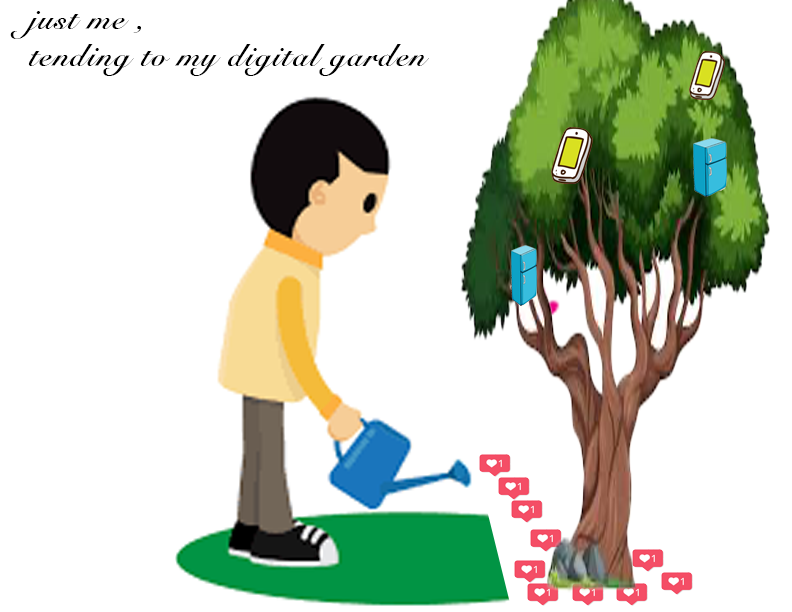

handmade web

hello world
a friend is writing
hello friend. this is a lot. i amm stresseed. while wonderful in concept and theory. its a lot. as far as the pdf. you've also got a lot. social media is a lot. this digital age is a lot. dot dot dot ... in my universe i seperate work and life like they seperate church and state, meaning ther is none. i am a robot. sucked in.
thank you
The Internets Back-to-the-Land Movement
Nothing is truly original. Everything has a history, a precedent, or a reference. The internet, which we often think of as a revolutionary and unprecedented tool, did not emerge from nowhere, like I always seemed to think. It became from a large group of ideas, movements, and concerns that predate digital tech.
the good room
Never had i hever thought so much about a room, an enviornment. Turns out this entire time my enviornment has been controlling me.